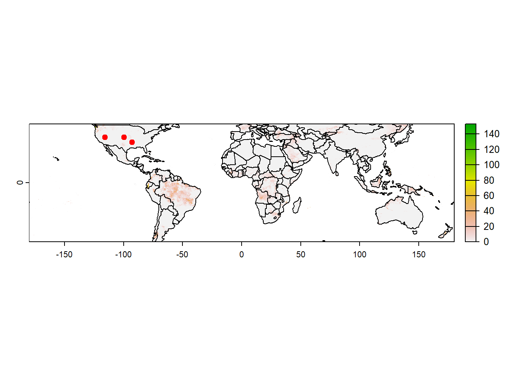
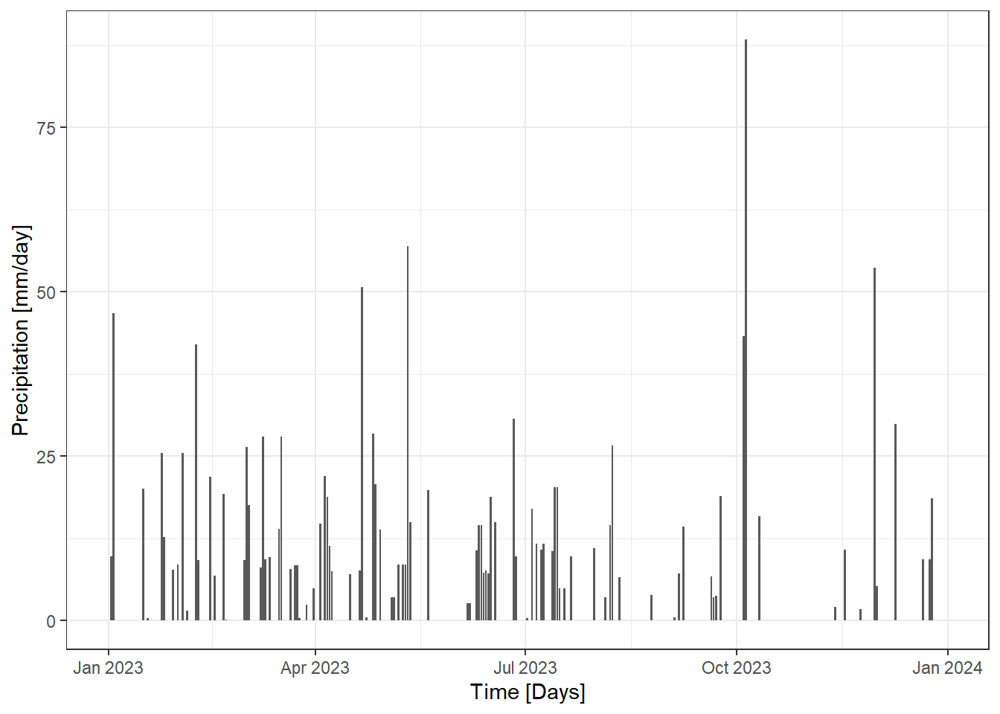
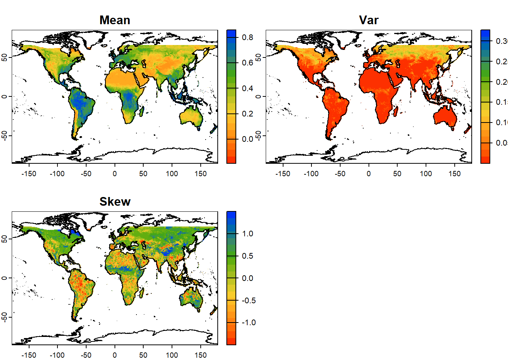
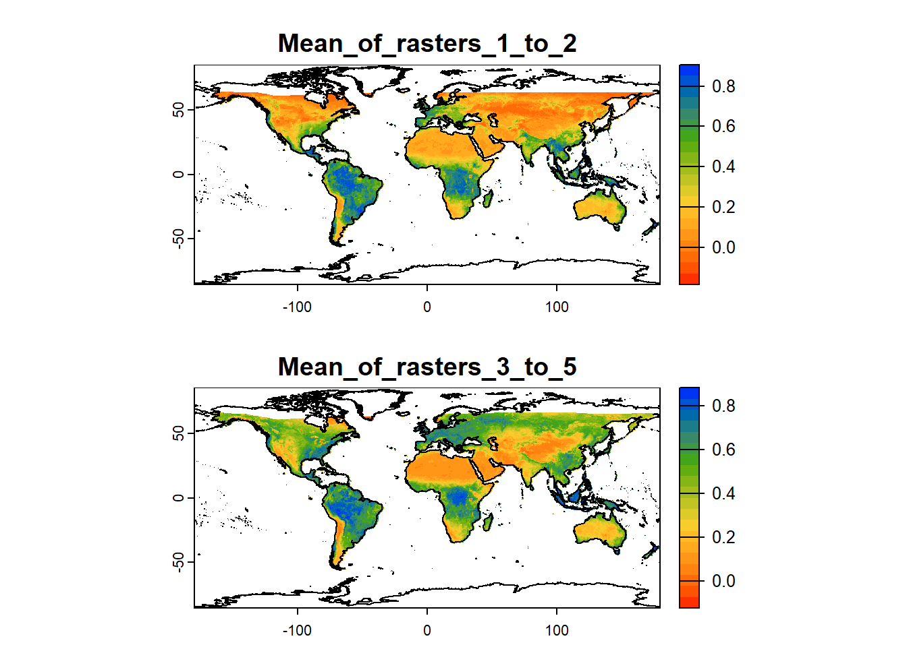

Let us start by downloading the netCDF file for global daily precipitation for the year 2023 from CHIRPS, accessible through the link: https://data.chc.ucsb.edu/products/CHIRPS-2.0/global_daily/netcdf/p05/chirps-v2.0.2023.days_p05.nc. We can use terra::rast function to import the netCDF to the workspace as a multiband raster. Let us first familiarize ourselves with the dataset.
# Copied path of the rasterdata_path <-"https://data.chc.ucsb.edu/products/CHIRPS-2.0/global_daily/netcdf/p05/chirps-v2.0.2023.days_p05.nc"# Download the raster using download.file, assign the name "daily_pcp_2023.nc" to the downloaded if (file.exists("daily_pcp_2023.nc")==FALSE){download.file(url = data_path, method="curl",destfile ="daily_pcp_2023.nc") }# Plot downloaded filelibrary(terra)pcp=rast("daily_pcp_2023.nc") # Import raster to the environment #~~~ Notice the attributes (esp. nlyr, i.e. number of layers, unit and time)print(pcp)
# Import sample locations from contrasting hydroclimatelibrary(readxl)loc=read_excel("./SampleData-master/location_points.xlsx")print(loc)
# A tibble: 3 × 4
Aridity State Longitude Latitude
<chr> <chr> <dbl> <dbl>
1 Humid Louisiana -92.7 34.3
2 Arid Nevada -116. 38.7
3 Semi-arid Kansas -99.8 38.8
# Value of the lat & lon of the locationslatlon=loc[,3:4] print(latlon)
# A tibble: 3 × 2
Longitude Latitude
<dbl> <dbl>
1 -92.7 34.3
2 -116. 38.7
3 -99.8 38.8
# Plot data for a specific layerworldSHP=terra::vect(spData::world) # Shapefile for CONUSplot(pcp[[100]]) # Same as pcp[[which(time(pcp)=="2023-04-10")]]plot(worldSHP, add=TRUE)points(latlon, pch=19, col="red")

Extracting Grid Time Series
We have previously used terra::extract function to extract cell values from a raster for user-defined locations. However, unlike previous examples, precipitation data is imported from a netCDF, which has 365 layers, one for each day in the year 2023. So, when we use the extract function using point coordinates, 365 values for each location are extracted.
# Import sample locations from contrasting hydroclimatelibrary(readxl)loc=read_excel("./SampleData-master/location_points.xlsx")print(loc)
# A tibble: 3 × 4
Aridity State Longitude Latitude
<chr> <chr> <dbl> <dbl>
1 Humid Louisiana -92.7 34.3
2 Arid Nevada -116. 38.7
3 Semi-arid Kansas -99.8 38.8
# Value of the lat & lon of the locationslatlon=loc[,3:4] print(latlon)
# A tibble: 3 × 2
Longitude Latitude
<dbl> <dbl>
1 -92.7 34.3
2 -116. 38.7
3 -99.8 38.8
# Extract time series using "terra::extract"loc_pcp=terra::extract(pcp, latlon, #2-column matrix or data.frame with lat-longmethod='bilinear') # Use bilinear interpolation (or ngb) option# View data sampleloc_pcp[,1:8] # View(loc_pcp)
# Plot hyetograph for the location in Louisianalibrary(ggplot2)pcp_df1=data.frame(time=time(pcp),pcp=as.numeric(loc_pcp[1,-c(1)])) # Select first row, exclude the first column# ggplotggplot(pcp_df1,aes(x=time,y=pcp)) +geom_bar(stat ='identity')+theme_bw()+ylab("Precipitation [mm/day]")+xlab("Time [Days]")

# Export the extracted data as CSVwrite.csv(loc, "extracted_pcp2023.csv")
Cell–wise Operation on All Layers
The terra::app() function applies a function to each cell of a raster and is used to summarize (e.g., calculating the sum) the values of multiple layers into one layer. We will use the NDVI netCDF generated in Sec 7.1.2 for the year 2016 to calculate global cellwise statistics.
#Let's look at the help section for app()?terra::app# Import NDVI layers from the NDVI generated in 7.1.2ndviStack =rast("NDVI.nc")ndviStack
# Subset raster stack/brick (notice the double [[]] bracket and similarity to lists)ndviStack_sub=ndviStack[[c(1,3,5,10,12)]] #Select 1st, 3rd, 5th, 10th and 12th layers# Calculate mean of each grid cell across all layersmean_ras =app(ndviStack_sub, fun=mean, na.rm = T)# Calculate sum of each grid cell across all layerssum_ras =app(ndviStack_sub, fun=sum, na.rm = T)#~~ A user-defined function for mean, variance and skewnessmy_fun =function(x){ meanVal=mean(x, na.rm=TRUE) # Mean varVal=var(x, na.rm=TRUE) # Variance skewVal=moments::skewness(x, na.rm=TRUE) # Skewness output=c(meanVal,varVal,skewVal) # Combine all statisticsnames(output)=c("Mean", "Var","Skew") # Rename output variablesreturn(output) # Return output} # Apply user function to each cell across all layersstat_ras =app(ndviStack_sub, fun=my_fun)# Plot statisticscoastlines =vect("./SampleData-master/ne_10m_coastline/ne_10m_coastline.shp")colpal = cetcolor::cet_pal(20, name ="r2") plot(stat_ras, col =rev(colpal), # Rev argument reverses the Palette (from Bu-> Rd to Rd -> Bu)asp =NA, # Aspect ratio: NA, fill to plot spacenc =2, # Number of columns to arrange plotsfun =function(){plot(coastlines, add=TRUE)} # Add coastline boundary)

Cell–wise Operation on Layer Groups
terra::tapp() is an extension of app(), allowing us to select a subset of layers for which we want to perform a certain operation. Let’s have the first two layers as group 1 and the next three as group 2. Function will be applied to each group separately and 2 layers of output will be generated.
#The layers are combined based on indexing.stat_ras = terra::tapp(ndviStack_sub,index=c(1,1,2,2,2),fun= mean)# Try other functions: "sum", "mean", "median", "modal", "which", "which.min", "which.max", "min", "max", "prod", "any", "all", "sd", "first".names(stat_ras) =c("Mean_of_rasters_1_to_2", "Mean_of_rasters_3_to_5")# Two layers are formed, one for each group of indices# Lets plot the two output rastersplot(stat_ras, col =rev(colpal), # Rev argument reverses the Palette (from Bu-> Rd to Rd -> Bu)asp =1, # Aspect ratio: 1, i.e. X==Ync =1, # Number of columns to arrange plotsfun =function(){plot(coastlines, add=TRUE)} # Add coastline boundary)

Layers as Function Arguments
The terra::lapp() function allows to apply a function to each cell using layers as arguments.
#Let's look at the help section for app()?terra::lapp#User defined function for finding differencediff_fun =function(a, b){ return(a-b) }diff_rast =lapp(ndviStack_sub[[c(4, 2)]], fun = diff_fun)#Plot NDVI differenceplot(diff_rast, col =rev(colpal), # Rev argument reverses the Palette (from Bu-> Rd to Rd -> Bu)asp =1, # Aspect ratio: 1, i.e. X==Yfun =function(){plot(coastlines, add=TRUE)} # Add coastline boundary)